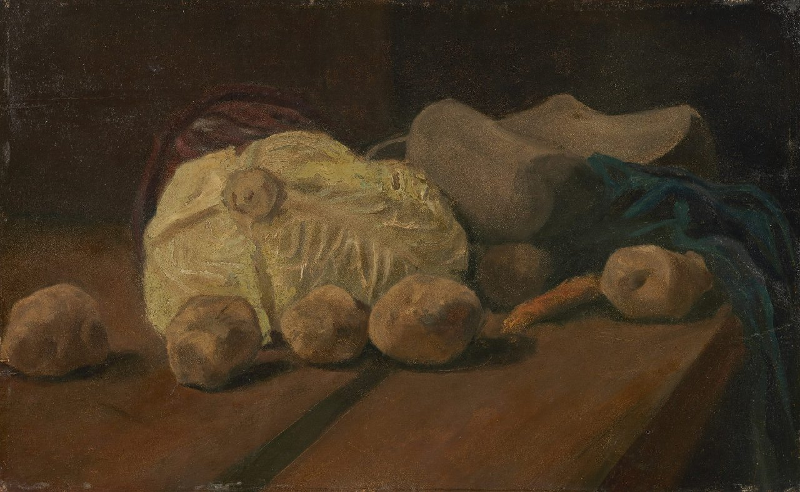
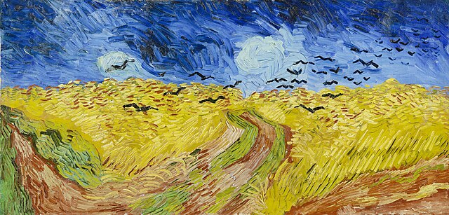

สำหรับผลงานจิตรกรรมภาพแรกของ แวน โก๊ะ เท่าที่มีการค้นพบและบันทึกไว้ก็คือภาพวาดที่มีชื่อว่า Still Life with
Cabbage and Clogs (ภาพหุ่นนิ่งกับกะหล่ำปลีและรองเท้าไม้) เป็นผลงานยุคต้นของ แวน โก๊ะ
และอาจเป็นงานจิตรกรรมภาพแรกที่เขาวาดขึ้นในราวเดือนพฤศจิกายน-ธันวาคม ปี 1881
ภาพเดียวที่ขายได้

แม้ว่าราคาภาพวาดในปัจจุบันของ วินเซนต์ แวนโก๊ะ จะมีมูลค่าสูง โดยภาพที่แพงที่สุดของเขาในตอนนี้คือ Portrait of
Dr. Paul Gachet (1890) ภาพวาด ดร.กาเชต์ แพทย์ทางเลือกที่ดูแล แวน โก๊ะ ในช่วงสุดท้ายของชีวิต ซึ่งมีราคาประมาณ
5,853 ล้านบาท รวมถึงมีภาพที่มีชื่อเสียงมากมายอย่างภาพ The Starry Night
ภาพจินตนาการสุดลํ้าที่เขาเขียนในโรงพยาบาลจิตเวช , ภาพชุด The Paris Sunflowers
โด่ดเด่นด้วยสีสันที่จัดจ้านสวยงาม , The Potato Eaters ภาพที่สะท้อนวิถีชีวิตชนชั้นกรรมกรได้อย่างยอดเยี่ยม
และภาพชุดที่เขาวาดตัวเอง แต่ตลอดชีวิตของเขา สามารถขายภาพวาดได้เพียง 1 ภาพ
The Red Vineyard at Arles (The Vigne Rouge) คือ 1 ผลงานหนึ่งเดียวในชีวิตของ แวน โก๊ะ จากภาพวาด 2 พันกว่าชิ้น
ที่สามารถขายได้ หรือเรียกว่ามีลูกค้ายอมซื้อตอนที่เขายังมีชีวิตอยู่
โดยภาพดังกล่าวเป็นภาพไร่องุ่นแดงในแถบโพรวองซ์ เมืองทางใต้ของฝรั่งเศส ภาพนี้ขายได้ในราคา 400 ฟรังก์
ที่งานนิทรรศการในกรุงบรัสเซลส์ เมื่อเดือนมีนาคม 1890 สี่เดือนก่อนที่ แวน โก๊ะ จะเสียชีวิต
(ปัจจุบันภาพนี้อยู่ในพิพิธภัณฑ์ที่ประเทศรัสเซีย)
ภาพสุดท้าย

แวน โก๊ะ มีปัญหาทางสุขภาพจิตสะสมมาตั้งแต่วัยเด็ก แต่อาการแย่ลงเรื่อยๆตั้งแต่เขามาใช้ชีวิตในตัวเมืองปารีส
ช่วงนี้แม้ว่าหลายคนจะเห็นว่าเขามุ่งมั่นกับการเขียนภาพเกือบทั้งวัน แต่บางช่วง แวน โก๊ะ
ใช้เวลาไปกับการดื่มสุราและเที่ยวเตร่ เมื่อย้ายไปอยู่ทางตอนใต้ในเมืองอาร์เลส์ แวน โก๊ะ
เริ่มถอยหางจากสังคมและแสงสี เขาได้เช่าบ้านหลังหนึ่งแล้วตกแต่งบ้านด้วยสีเหลืองทั้งหมด
โดยหวังก่อตั้งกลุ่มศิลปินอิมเพรสเช่นนิสท์ขึ้นในเดือนตุลาคมปี ค.ศ.1888
พอล โกแกง จิตรกรชาวฝรั่งเศสที่เป็นเพื่อนกับเขาได้ย้ายมาอยู่ในบ้านศิลปินสีเหลืองตามคำเชิญ
แต่พวกเขากลับมีปากเสียงและทะเลาะกันบ่อย จนกระทั่งเช้าของวันคริสต์มาสอีฟ โกแกง แจ้งตำรวจให้มาดูอาการ แวน โก๊ะ
ที่ตัดหูข้างหนึ่งของตัวเองเอาไปให้โสเภณีชื่อ กาเบรียลล์ แบร์ลาทิเยร์ เพื่อเป็นของขวัญวันคริสต์มาส
เมื่อเธอเปิดกล่องถึงกับเป็นลมล้มพับไป (บางรายงานอ้างว่า โกแกง เป็นคนตัดหู แวน โก๊ะ ก่อนจะจากไป)
ต่อมา แวน โก๊ะ ถูกส่งตัวไปทำแผล ก่อนจะถูก ธิโอ
น้องชายส่งตัวไปรักษาอาการติดสุรากับอาการป่วยทางจิตอื่นๆในคลินิกผู้ป่วยโรคจิตในแซงต์-เรมี เมื่อหายดี
เขาย้ายมาอยู่ที่เมืองโอแวร์ซูว์รวซ โดยภาพวาดภาพสุดท้ายของเขา คือภาพ Wheatfield with crows
(ทุ่งข้าวสาลีกับอีกา) วาดขึ้นเมื่อต้นเดือนกรกฎาคม ปี 1890 เชื่อกันว่านี่คือภาพสุดท้ายของเขาก่อนที่ แวน โก๊ะ
จะยิงตัวเองตายในวัย 37 ปี